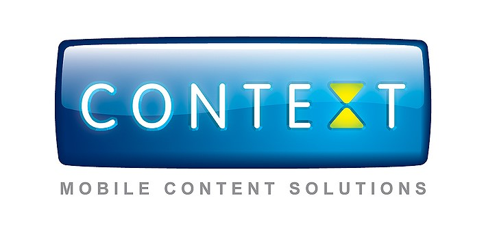

8 th floor · 75 Alba Iulia str. · Chisinau · Moldova
Tel/fax. +373-22-81-57-00
E-mail: office@context.md Internet: www.context.md
Oferta comerciala
Compania "Procontext" SRL este un furnizor de IVR și SMS servicii, înfiintata in anul 2005. Obiectivul companiei este de a oferi clienților și partenerilor săi posibilitatea de a efectua servicii interactive utilizind tehnologia IVR și SMS-uri.
Pentru ce este necesar Serviciul SMS- Notificare?
- De a transmite in mod operativ informații importante clientilor
- De a informa un număr nelimitat de clienți în cel mai scurt timp posibil
- De a trimite noutati despre companie, promotii, reduceri sau alte oferte
- De a creste vânzările în rândul clienților existenți
- De a extinde baza de clienți și de a atrage clienți noi
- De a felicita clienții dumneavoastră cu sărbătorile
- De a promova produsul si de a imbunatati comunicarea cu clientii
Avantajele noastre:
- Calitate – oferim servicii de notificare prin intermediul mesajelor SMS în rețeaua tuturor operatorilor de telefonie mobilă din Republica Moldova. Serviciul funcționează 24 de ore, 7 zile pe săptămână.
- Preturi avantajoase - lucrăm în mod direct cu toti operatorii (Orange, Moldcell, Unite), fara intermediari.
- Tipul de mesaj SMS - SMS Notificare + SMS Publicitate cu toți operatorii - Orange, Moldcell, Unite.
- Profesionalism - in compania noastră lucrează doar specialiști calificați, care oferă clienților noștri suport, atât de organizare, cât și de asistență tehnică în domeniul SMS Marketing.
- Viteza – adresarile clienților catre specialistii nostri sunt prelucrate în cel mai scurt timp posibil.
- Аляс (numele expeditorului) - - posibilitatea de a include numele expeditorului in SMS mesaj (până la 11 caractere).
- Portabilitate – posibilitatea de a detecta in mod automat la care rețea apartine numărul Abonatului.
- SMS- uri lungi - capacitatea de a trimite mesaje SMS de până la 470 de caractere în alfabetul latin, și până la 200 de caractere în alfabetul chirilic.
- Limba abonatului - posibilitatea de a trimite mesaje SMS în limba latină (inclusiv diacriticele) și in limba chirilică.
Garanția, pe care o primiți:
- Integritatea si confidențialitatea bazei Dvs. de abonati.
- Viteza stabila a serviciului, viteză inalta de expediere a mesajelor sms.
- Raport de livrare pentru fiecare mesaj sms.
- Verificarea portabilitatii numarului abonatului.
- Oferirea serviciilor de asistenta informationala, fără zile de odihnă, între orele 09:00 până la 21:00.
Tarifele pentru notificarea SMS:
0.30 lei pentru fiecare mesaj 1 SMS MT - Orange, Moldcell, Unite
0,42 lei pentru fiecare mesaj 1 SMS МТ pentru baza de publicitate Moldcell
Contactele noastre:
Telefon de contact: 022 815 700
Е-mail: irina.stoeva@context.md